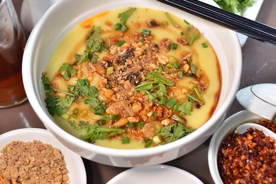

Shan-Noodle
Myanmar Traditional Food

Ingredients
- 500g Shan-style sticky rice noodles
- 1 tablespoon oil
- 500g boneless chicken or pork, thinly sliced
- 2 cups cooked chickpeas
- 2 cups pickled mustard greens, rinsed and sliced
- 1/4 cup fried garlic
- 1/4 cup chopped coriander
- Chili flakes, to taste
Instruction
Step by Step
- Cook the Shan-style sticky rice noodles according to the package instructions.
- Drain and rinse the noodles under cold water to stop them from cooking further.
- Toss the noodles with 1 tablespoon of oil to prevent them from sticking together.
- Cook the sliced chicken or pork in the soup until cooked through. Remove from the soup and set aside.
- Divide the cooked noodles into individual serving bowls.
- Top the noodles with the cooked chicken or pork slices,
Enjoy your Myanmar Shan-Noodle!